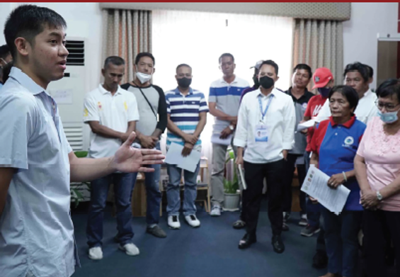
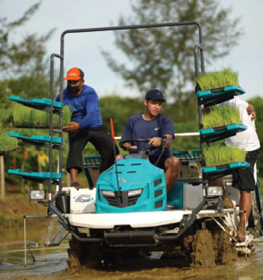
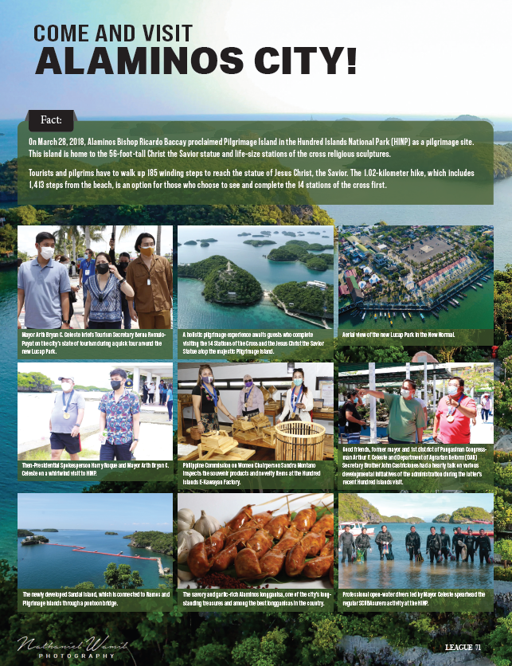

Meeting halfway and working collaboratively is the way to go for Alaminos City Mayor Arth Bryan Celeste as he leads the city toward significant changes.
If you want to run for public office, you need to train.” This is one piece of advice Alaminos City Mayor Arth Bryan Celeste learned from his father, Pangasinan 1st District Representative Arthur Celeste, that helped make him the leader and friend that he is today.
Celeste ran for barangay chairperson of Barangay Magsaysay, Alaminos City, at the age of 20. Growing up, he shares, he was an introvert and can’t even raise his hands during class recitation. However, he was able to overcome this hindrance and himself became an inspiration for others not only in his city but the whole of Pangasinan.
He opens, “During college, I had to decide what I wanted in life and I thought, ‘Why not try to be a public servant?’ But before I aspired to be one, I [knew that I] had to change a lot about myself.”
Over time, Celeste became more confident and succeeded in his first foray into politics. “There was one event where I told myself, to challenge myself, ‘Okay, for this particular event, I am not going to read anything [during my speech], I’ll just say what I want to say from the heart.’ And then from there on, natuto na ako (I learned) to become an orator, to become a public speaker, nakuha ko na ‘yung (I developed my) confidence,” Celeste shares.
His confidence also comes from his father who is “a good orator,” says Celeste. He adds, “That’s who he is, the one I’m trying to emulate in terms of public speaking, because my dad never reads [a speech] and in everything he does, you can see that people really listen.”
CONTINUING PROJECTS Celeste says his father’s three decades of service in various capacities—barangay chairperson for 13 years, congressman for nine years, and city mayor of Alaminos for six years—truly inspired him. He shares, “Knowing my dad being a public servant for so many years, nakita ko ‘yung mga ginawa niya (I witnessed what he did) as a public servant and the things he has been doing, the things he has done not just for the district but for the city as well.”
“It was my dad who inspired me because nakita ko ‘yung pagbabago (I saw the positive change), the progress he brought forward for the good of the City of Alaminos. That is why I am determined to continue his legacy of giving good service to the people of Alaminos,” he adds.
One notable program launched by his father that Celeste has retained and is improving in terms of access is the city’s scholarship program. The program offers financial assistance to college students studying in public and private schools in the city. Celeste shares that they visit every barangay—even the far-flung ones—of the city to extend the program and break
the news to those who can’t afford to travel to the city center. He says, “Apparently, a lot of people don’t know about the programs of the LGU especially ‘yung malalayong barangay kasi (the far-flung barangays because) they don’t have the luxury of going to the city center. It would take them 30 minutes [of travel time]—that’s with cars. What more when they use a motorbike or tricycle?” Because of the continuous information dissemination to improve the scholarship program and address illiteracy in the city, Alaminos City emerged as regional champion of the 2022 National Literacy Awards (NLA) for Region 1 awarded by the Department of Education (DepEd) through the Literacy Coordinating Council (LCC) and 2022 NLA 4th placer for the outstanding local government unit (LGU)—component city—given by the DepEd and LCC.
The NLA is a biennial search that aims to honor outstanding individuals, institutions, local government units, and nongovernment organizations (NGOs) for their dedication, commitment, and contributions to eradicating illiteracy in their respective communities. Another project that has had a great impact in the city in terms of environmental protection is the ScuBASURERO project. This covers Alaminos City’s famous tourist attraction, the Hundred Islands National Park (HINP) which offers great beaches and literally over a hundred islands. One thing that had to be addressed is getting rid of the garbage that had been stuck at the bottom of the sea for years. This entailed deep diving and manually collecting the trash. The program’s name, ScuBASURERO, is a portmanteau of “scuba diving” and “basurero” (garbage collector). The program started in 2016 when a group of scuba divers held a clean-up drive on the island. The participants eventually decided to make the clean-up drive a monthly activity.
On the project’s sixth year, Celeste firmly says, “Kailangan talaga i-maintain ‘yung ScuBASURERO dahil kailangan i-maintain ‘yung cleanliness. ‘Yun ‘yung rationale ng ScuBASURERO kaya monthly ginagawa siya and sometimes sumasama ako (We need to maintain the ScuBASURERO project because we need to maintain cleanliness [in the area]. That’s the rationale of ScuBASURERO. That’s why we do it monthly and sometimes I join them).” Volunteers from NGOs, national government agencies like the Department of Environment and Natural Resources (DENR), Bureau of Fisheries and Aquatic Resources (BFAR), Philippine National Police (PNP), and Philippine Coast Guard (PCG), as well as licensed divers employed by the city government of Alaminos who regularly conduct the underwater clean-up drive, take part in the ScuBASURERO project. More than maintaining the cleanliness of Hundred Islands is promoting and supporting it and the city’s tourism
industry in general. This may seem easy, but Celeste’s observation is that “tourists don’t know the Hundred Islands [National Park], they’ve never been to Hundred Islands, they don’t know Alaminos City.” Celeste notes, “Now what I want to do is to make Alaminos City known [to as many tourists as possible]. And one thing that I can do is focus on two things— establish food tourism here in Alaminos and continuously improve Hundred Islands to cater to a bigger market.”
NEXT MOVE Celeste says that his goal for the next three years is for Alaminos City to be an economic center. He wants to focus on the city’s economic growth and development after the downturn caused by the COVID-19 pandemic. Celeste saw this as an inspiration to do better for the welfare of his constituents. Right now, the city government is looking for a place to establish its growth center. Celeste notes that it’s going to be a “new city” whose development will be stimulated by the city government by putting up growth centers, a new public market, and new government buildings that would bring in foot traffic. “And with that, businesses will come because the locals will establish small and medium-scale enterprises (SMEs). So it’s going to cure unemployment. Employment will rise, and our central business district will be decongested.”
The young mayor is positive that the planned business district will benefit not only Alaminos but the whole of Pangasinan’s 1st District. “So this will become a major commercial hub for the 1st District. [We’ll have] Alaminos as a developing growth center, a new commercial hub here in the heart of the district at hindi na kailangang pumunta sa Dagupan (and there will be no need [for consumers] to travel all the way to Dagupan) which is two hours away from the city,” he continues. Celeste also wants to prioritize the farmers who sacrificed so much during the height of the pandemic.
“I’ll make farm mechanization a priority because the farmers belong to one of the poorest sectors in our society. And nakatataba ng puso na nabibigyan mo ng tulong ang (It is heartwarming that you are able to provide help to this) sector especially since they are the ones that really need help.”
INSPIRING PEOPLE At 22 years old, Celeste was the youngest mayor in the Philippines elected in 2019. For him, however, the title was not that important. He says that he was gratified but at the same time—and more importantly,— he wanted to be known as the mayor who made a difference. When asked what he felt at the time, he shares, “I never saw it as pressure. For me, it served as an opportunity [to show my worth]. I was in the spotlight because [I was] the youngest mayor. So when you’re in the spotlight, you take advantage of it, so ipakita mo (show what you can do).”
As still one of the youngest public servants today, Celeste has a piece of advice for the youth who plan to run for public office: “If you want to change our country; want it to be more progressive, to be better, it will be our generation who will do the job. So I hope that the people in my generation, the youth, will become more active in serving their communities.” “Because sooner or later, we will be the ones in charge. And hopefully when we’re the ones in charge, we would know how to solve the problems that need to be addressed. So, I want you to be more active in the community,” he adds. Now that more progressive young leaders are being given the chance to serve Alaminos City, Celeste says that he’s happy especially that they are able to talk among themselves. They are able to share and discuss progressive ideas and inspire one another to do better. He adds, “It’s really more of collaborative work. I don’t like deciding on my own. I say what’s on my mind. They say what’s on their mind and we meet halfway. That’s how I lead the local government of Alaminos City. It’s not just me who’s deciding, it’s a group of people saying their piece and deciding as one, [determining] what we should do for the betterment of Alaminos City. The young mayor says that when he wants something done, he wants the people around him to learn something from him and apply those learnings to their daily lives. “Because my brand of leadership is more on [doing what I could and] inspiring others to also do their best,” Celeste ends.
